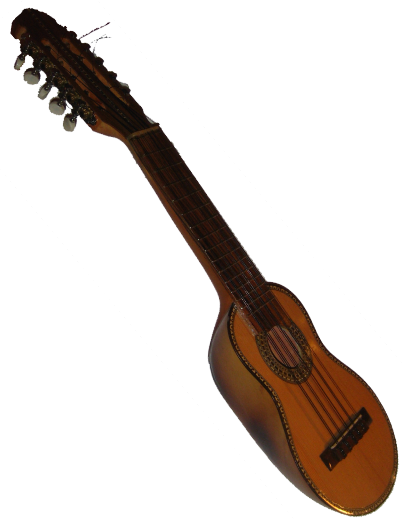
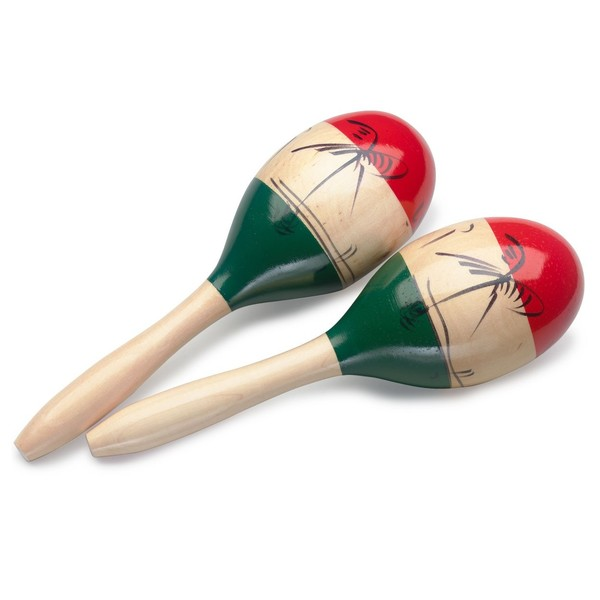
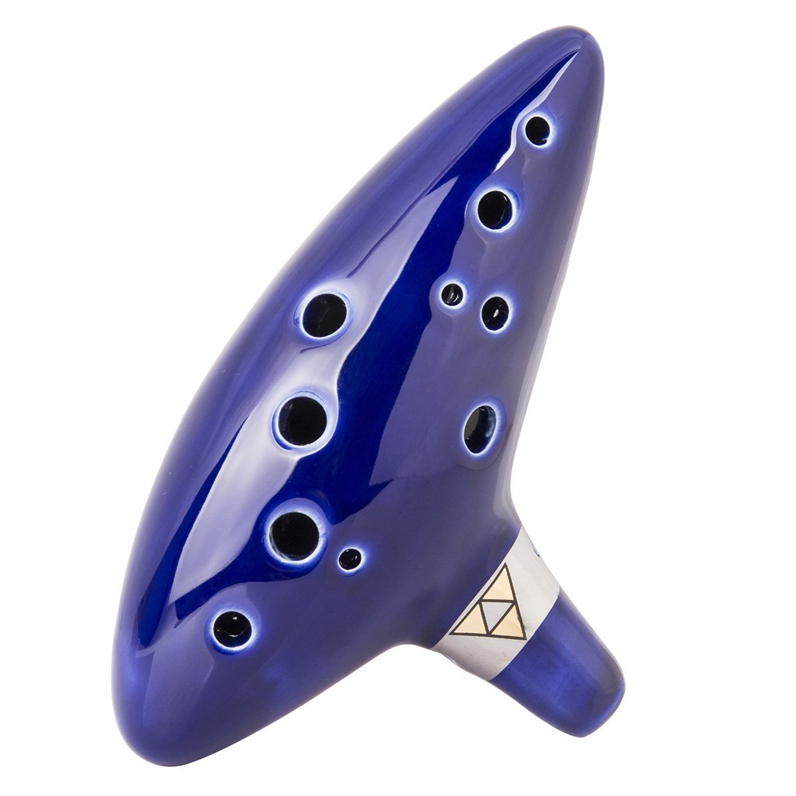
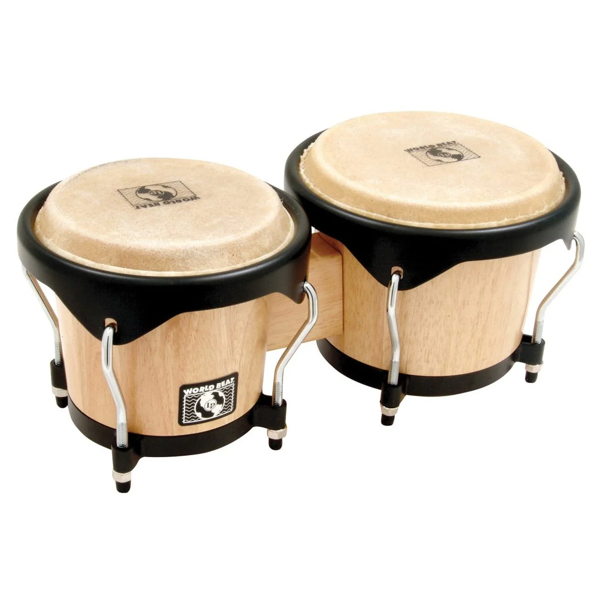
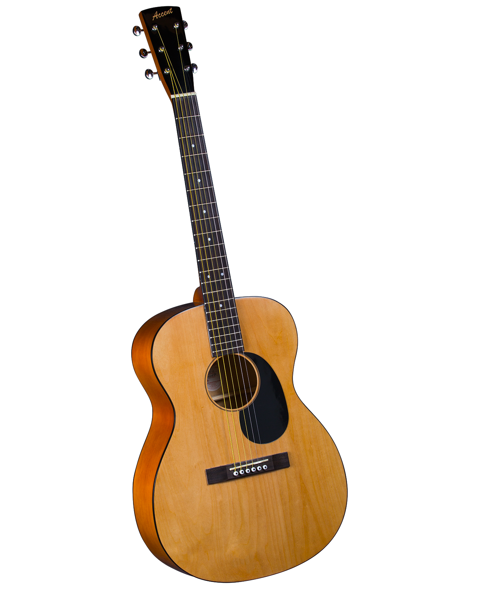
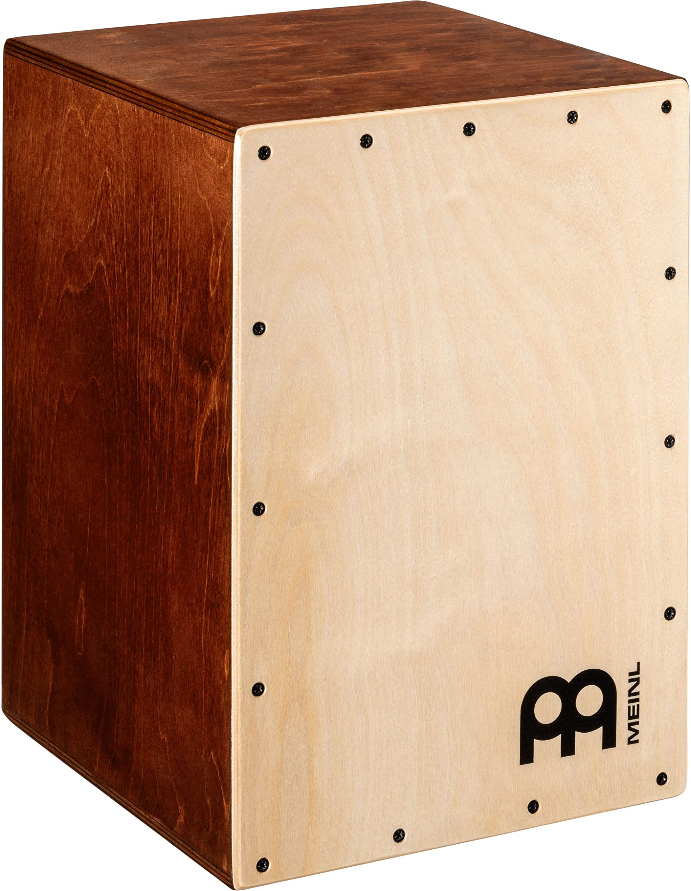

Popular Genres
-
Salsa
- Originating from Cuba, Puerto Rico, and New York, this genre is defined by a distinct beat called the clave. It typically features bongos, congas, and timbales with lyrics that tell short stories. Some key originating artists include Frank “Machito” Grillo, Tito Puente, Johnny Pacheco, and Celia Cruz.
-
Reggaeton
- Originating from Panama and Puerto Rico, this genre is defined by a driving drum-machine track with a rhythm and beat pattern that are repeated in almost every song. It typically features lyrics about erotic love, which inspired the sensual dance called perreo. Some key originating artists include El General, Vico C, Don Omar, and Daddy Yankee.
-
Bachata
- Originating from the Dominican Republic, this genre is defined by its slow sensual beat with romantic or sometimes bittersweet lyrics. It typically features guitar, bass, bongo, and güira. Some key originating artists include José Manuel Calderon, Leonardo Paniagua, and Bernardo Ortiz.
-
Merengue
- Originating from the Dominican Republic, this genre is defined by a repeating five-beat pattern called a quintillo. It typically features a diatonic accordion, a tambora, and a charrasca or güira with lyrics that are festive and upbeat. Some key originating artists include Francisco “Ñico” Lora and Luis Alberti.
-
Rancheras
- Originating from Mexico, this genre is typically played by a mariachi ensemble. It typically features vihuela and guitarrón with lyrics that are passionate for love, country, and honor. Some key originating artists include José Alfredo Jiménez, Felipe Valdés Leal, and Vicente Fernández.
-
Cumbia
- Originating from Columbia, this genre is defined by a double beat with maracas or drum with flutes playing melody with lyrics focused on love and celebration of life. Some key originating artists include Celso Piña, La Sonora Dinamita, and Aniceto Molina.
-
Bossa Nova
- Originating from Brazil, this genre is defined by a jazz style. It typically features guitar and understated vocals with romantic lyrics. Some key originating artists include João Gilberto, Vinícius de Moraes, and Antônio Carlos Jobim.
-
Tango
- Originating from Argentina and Uruguay, this genre is defined by the bandoneón which is a type of accordion. While sometimes only instrumental, some feature lyrics that are philosophical or expressing love. Some key originating artists include Rosendo Mendizabál, Carlos Gardel, and Astor Piazzolla.
Brief History
by Marilyn Ray
Latin music which serves as an overarching term for almost any music in the Spanish language. Most of what is currently known as Latin music has come from the result of colonization like the adoption of the European Guitar, African conga and tambora drums, native gaita flutes and maracas.
In terms of modern music, Spanish pop hits began to rise with the inspiration from rock and pop acts from the United Kingdom during the British Invasion. The first song to cross the border of Spain and become a national hit was not even sung in Spanish, Black is Black by Los Bravos released in 1966. It reached #1 in Canada, #4 in the US, and inspired a French version by Johnny Hallyday.
Eurovision Song Contest helped this push for Spanish music popularity in the 60s and 70s. The first Eurovision winner from Spain was Massiel with La La La written by Dúo Dinámico in 1968. The most known song by Spain featured in Eurovision though was Eres Tú by Mocedades in 1973 which was Spain’s highest score in the history of the contest and inspired more than 70 versions in different languages.
In the 80s and 90s, Latin music was growing in popularity with artists like Shakira, Ricky Martin, Enrique Iglesias, and Jennifer Lopez. These artists helped bring in the wave of Latin Pop. In the 2010s, Latin R&B was also on the rise with artists like Kali Uchis, Paloma Mami, and Girl Ultra.
Common Instruments
-
Charango
 -
Maracas
 -
Ocarina
 -
Bongó
 -
Guitar
 -
Congas

-
Cajón

Explore Spotify!
Top Artists and Latin New Releases